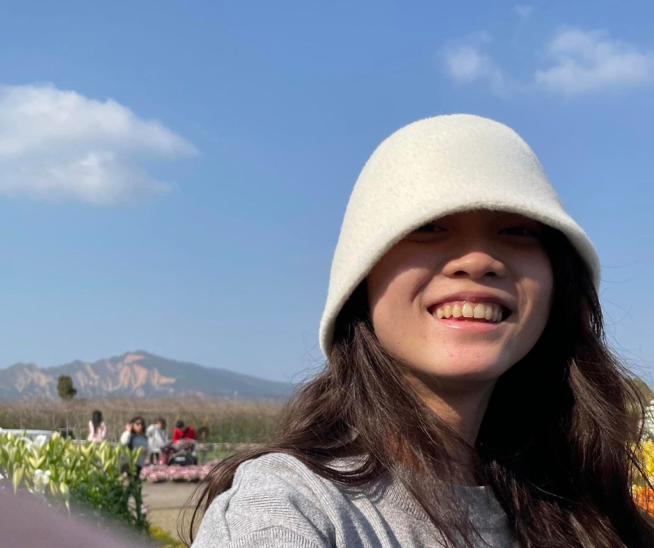

關於我
我熱愛中文，喜歡學習跨領域知識。透過文學的魅力與科學的探索，積極將不同領域的知識融合，拓展自我學識視野，並在其中找到無窮的創意與啟發。

就讀國立中央大學中文系
- 姓名: 王苡芯
- 性別: 女
- 年齡: 20
- 地區: 桃園市中壢區
- 聯絡電話 0989507117
- 電子郵件 a0989507117@gmail.com
社會現況
AI人工智慧對人類產業的隱憂：就業市場變化、技能需求改變、社會不平等加劇、個人隱私風險、演算法偏見等。需要制定政策保障就業機會、提供技能培訓、確保數據隱私安全、解決演算法偏見問題，以促進公平和可持續發展。同時，人類需培養靈活性和批判思維，與其共同發展，實現共融的未來。
培養技能
擁有以下技能可以幫助文科生更好地應對數據時代的挑戰，並在文學創作、語言研究和資訊分析等領域中發揮更大的影響力。
多元語言 70%
跨領域溝通 85%
人文及數位素養 80%
創意思維與創新能力 80%
研究方法和批判思維 90%
資料分析和處理 75%
我目前做的準備
透過修習AI學分學程、土木工程微學程、劇場設計、行銷傳播、文化展演和社會研究，能夠跨越不同領域，擴展專業能力，提高就業競爭力。
劇場策劃與藝術展覽的交融
中大崑曲博物館特展-「一點明月窺人：崑曲中的月下風景」
2022/12/28 - 2023/05/26
天際明月，啟發文人的浪漫情思。展覽將迎來傳奇名家筆下的月色與情懷。《紫釵記》與《牡丹亭》的元宵與中秋，《長生殿》與《廣寒宮》的關聯，《琵琶記》中的美好月景，各有情節。展覽由中大中文系學生與崑曲博物館合辦，發揮創意與巧思，共同打造崑曲博物館元宵燈會勝景，為特展增添無限色彩。
劇聚2023夏季公演《天王降臨多久川》
2023/05/10 -2023/05/13
「劇聚」-熱愛戲劇，齊聚一堂，展現劇場魅力。《天王降臨多久川》講述跨文化故事，激盪人心，與觀眾感受劇場力量，共創難忘體驗。


跨領域探索發展
多元能力的充實-性別與社會、環境新聞、手作美食
這次文化交流活動讓我能夠在製作手工煎餅的過程中，與來自不同國家的同學一起互動和交流。透過這個活動，我學到各種文化的飲食傳統，也建立深厚的友誼和理解。我更加珍惜手工食物的價值和味道，這個活動不僅讓我享受到美食，更是促進跨文化交流和友誼的建立。
我透過實作和報導分析，學習環境議題和新聞寫作，培養對土地和新聞的關心與能力。進行實際採訪和報導撰寫，掌握資訊收集和客觀報導的技巧。同時，分析優質報導，提升我的寫作水平和理解能力。這門課豐富自我環境知識，激發對環境議題的關注和參與。我相信這些學習對未來媒體專業發展有著重要的影響。
這是一門探討性別與社會相互作用的學科，課程內容豐富多元。我學習性別概念與理論、性別與文化、性別與社會制度、性別與身體、性別與權力以及性別研究方法等方面的知識。透過這些課程，深入了解性別的定義、性別角色和身份的概念，以及性別在文化和社會制度中的作用和不平等問題。老師與學生分享性別與身體的關係，以及性別與權力結構之間的連結。此外，課程還介紹性別研究的方法論，讓學生學會如何進行性別相關的研究與分析。這門課程不僅培養我對性別平等和社會正義的意識，也開始思考如何推動性別平等，打破性別刻板印象，並促進一個更公正平等的社會。
STEM預鑄混凝土構造設計研發及女性人才培育計畫
土木微學程團隊通過破冰活動建立團結，合作完成公車亭預鑄構建模型、Sketchup設計、影片和簡報。STEM學生負責實作，非STEM學生則協助設計和文化意象，跨領域合作促進全面發展。